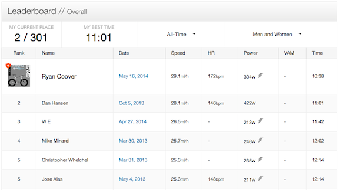
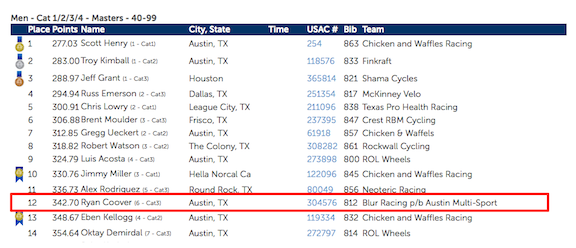

F-40 Bummer, lost my KOM to a Cat3 Racer
15 May 2014
Yesterday there was a 21 mph (gusting to 30 mph) tailwind on a Strava 5.1 mile segment that I have owned the KOM for six months now by almost a whole minute.
Well yesterday Ryan Coover, a professional Cat3 racer, used the good tail wind to beat my KOM by 23 seconds averaging 29.1 mph for the 5.1 mile segment.
Damn, that is fast!
My excuse is that it was dead calm when I got the KOM.
I’ve made significant changes to the F-40 to make it faster and I’m now much more experienced riding fast on the bike.
After losing a little bit of weight I should be able to do that segment at 30 mph next time (a slight tailwind wouldn’t hurt either).
I guess it is time to get back into shape and maybe in October try to reclaim the KOM.

